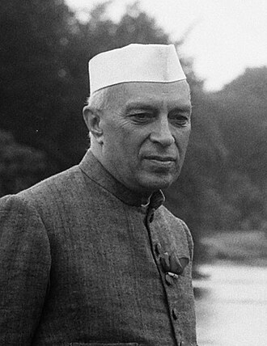

THE FOUNDING YEARS
1947
A new chapter begins
India becomes independent, and Jawaharlal Nehru takes office as the country's first prime minister.
Discover the leadersA living story of leadership
Discover the people, pivotal moments and ideas behind the office of India's Prime Minister—from independence to the present day.
A story still unfolding.
A NATION IN MOTION
The role of prime minister has evolved alongside the country's ambitions and challenges. Here are a few defining moments in that journey.

THE FOUNDING YEARSIndia becomes independent, and Jawaharlal Nehru takes office as the country's first prime minister.
Discover the leadersLeadership through conflict, agricultural change and the steady work of building national institutions.
Economic reforms begin a new era of liberalisation, trade and changing opportunity.
Technology, infrastructure and India's place in the world become central themes of public life.
THE PEOPLE BEHIND THE OFFICE
Explore each leader's tenure, political party and contribution to India's story. Search by name or filter by party.
IDEAS THAT SHAPE A NATIONThe future depends on what you do today.
TAKE A MOMENT
Put your knowledge of India's prime ministers to the test. Five quick questions, one national story.
05 QUESTIONSABOUT BHARATHISTORY
AN EDUCATIONAL PROJECTBharatHistory is a student-led introduction to the people who have served as Prime Minister of India. Use it as a starting point for learning, reflection and further research into the country's democratic journey.
Return to the beginning